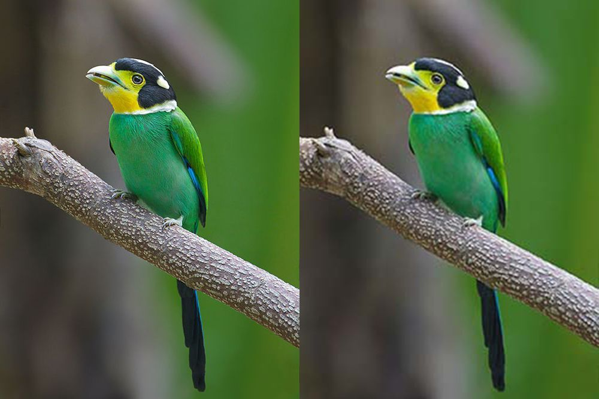

Compress images safe and secure always! Privacy matters
In today's digital era, website speed plays a crucial role in user satisfaction and overall success. Slow-loading websites can deter visitors, leading to a higher bounce rate and lower conversions. One effective strategy for optimizing website performance is to compress images. By reducing the file size of images without compromising quality, you can significantly enhance page loading speed. In this blog post, we will explore the importance of image compression and guide you through the process of compressing images online to supercharge your website's speed
-
Understanding the Importance of Image Compression
Images are integral to web design, helping to captivate and engage visitors. However, large image files can slow down your website, leading to frustratingly long loading times. Image compression allows you to strike a balance between visual appeal and optimal performance. Compressed images load faster, improve user experience, and positively impact your site's search engine rankings.
-
Selecting the Right Image Compression Format
Before diving into the compression process, it's crucial to choose the appropriate image file format. The two most common formats used on the web are JPEG and PNG. JPEG is best for complex images or photographs, as it offers high compression ratios with minimal loss of quality. PNG is ideal for images with transparency or sharp edges, such as logos or icons, as it preserves image details. By selecting the right format, you can maximize the benefits of compression.
-
Online Image Compression Tools:
Numerous online tools simplify the image compression process, making it accessible to website owners and developers. Let's explore some popular options:
- nothingbutcompress: If you primarily work with JPEG images, the JPEG Optimizer tool allows you to compress and optimize your files easily. It offers a slider to adjust the compression level, enabling you to find the perfect balance between file size and image quality.
- TinyPNG: TinyPNG is a user-friendly tool specifically designed for compressing PNG images. It leverages smart lossy compression techniques to reduce file sizes without compromising visual quality.
-
Compress Images Online:
- Go to https://nothingbutcompress.com
- Click on upload files and upload without any limit
- Compress images to your desired quality for free by sliding the range
- Click on dowload
-
Additional Tips for Optimizing Images:
In addition to compression, consider implementing the following practices to further enhance image optimization:
- Resize images: Scale images to the required dimensions before compressing them. This reduces the image file size without sacrificing quality.
- Leverage responsive images: Use the HTML "srcset" attribute to serve different image sizes based on the user's device, further improving loading speed.
- Enable lazy loading: Load images only when they are visible in the user's viewport, reducing initial page load times.
The Importance of Safe Image Compression for SEO
Optimizing website performance is crucial in delivering exceptional user experiences. Compressing images online is a powerful technique to boost your site's loading speed, decrease bounce rates, and improve search engine rankings. By selecting the right compression format and utilizing reputable online tools, you can strike the perfect balance between image quality and file size. Incorporate image compression into your web development workflow to ensure your website is a blazing-fast online destination for visitors.
listen audio